校内实验室项目：用低成本方案设计晶圆检测（明场检测）的最小可行产品（MVP），打通 「晶圆搬运 → 高精度运动定位 → 摄像头下逐芯片明场检测」工作流。我负责视觉硬件选型与 全链路缺陷检测算法的开发复现——参考浙江大学论文，基于 OpenCV 独立完成从图像预处理、 图像矫正到缺陷提取的完整算法实现，并推动项目从算法验证落地到实际检测环节。
这套系统与锂电池焊接项目结构相似，但对运动控制和工业视觉的要求更高：设备需要具备晶圆搬运能力， 以及足够的移动精度，才能在摄像头下对芯片逐个进行明场检测。我的工作集中在视觉识别侧：
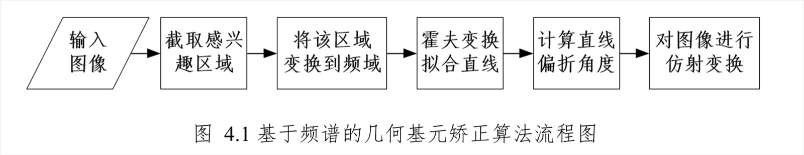
本项目基于 OpenCV 独立完成晶圆缺陷检测的完整算法开发复现，核心工作包含 4 个部分：
针对晶圆图像的几何畸变问题，采用傅立叶变换频谱图并结合霍夫变换实现图像自动矫正， 显著提升后续配准的精度。流程：图像裁切 → 空域转频域 → 设定频率阈值 → 霍夫变换识别线 → 计算矫正角度。
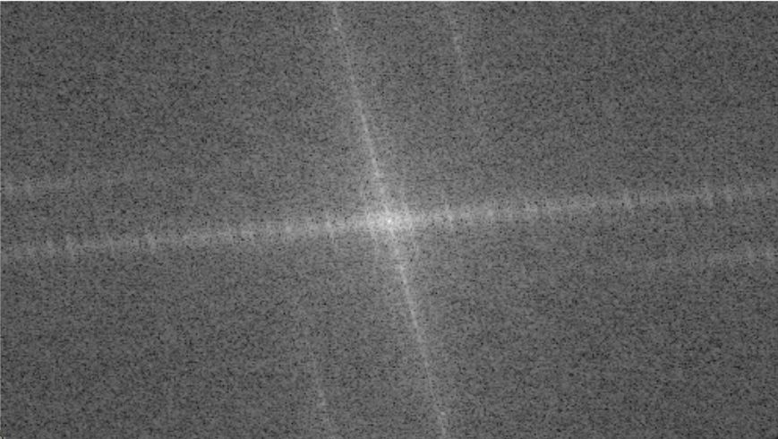
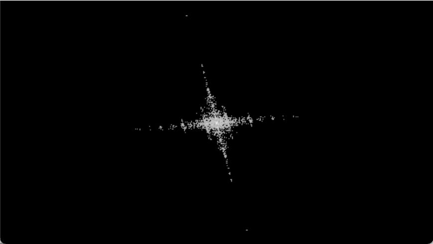
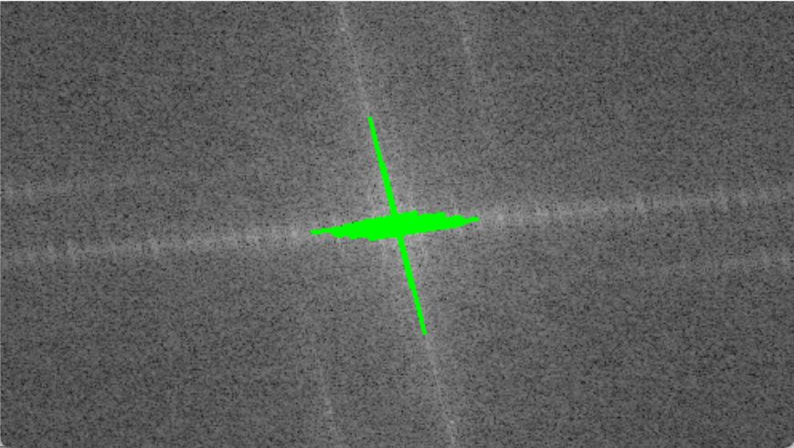
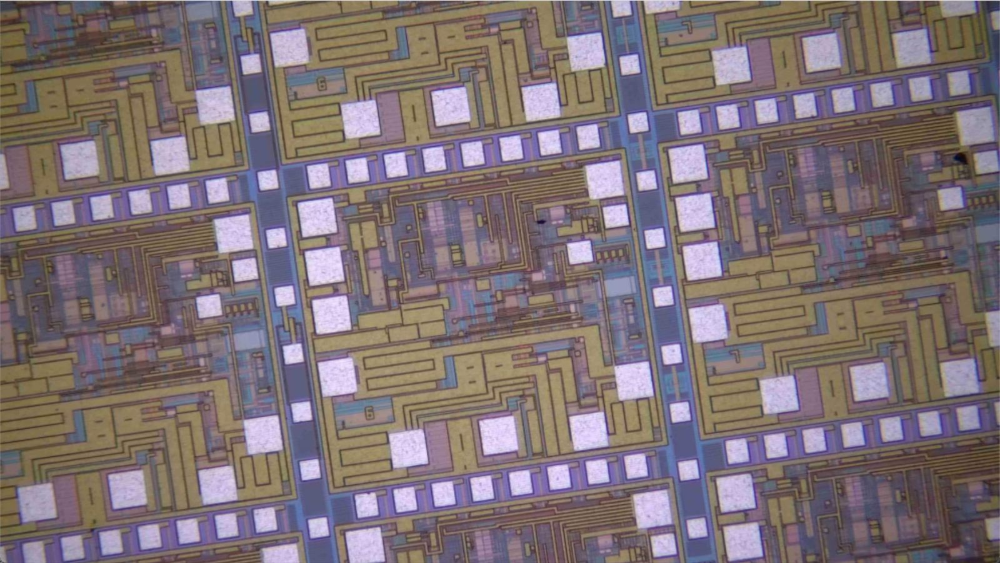
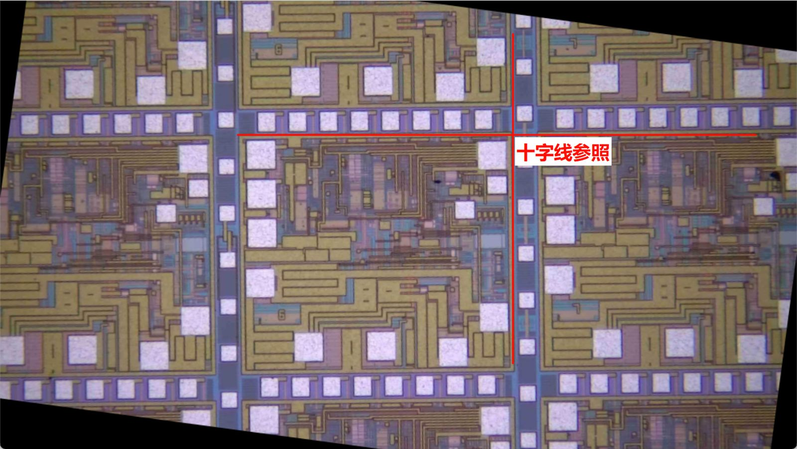
利用模板匹配精准定位晶圆上的重复子结构，并切割晶圆单元图像， 提高检测的标准化程度，为后续逐单元比对做准备。
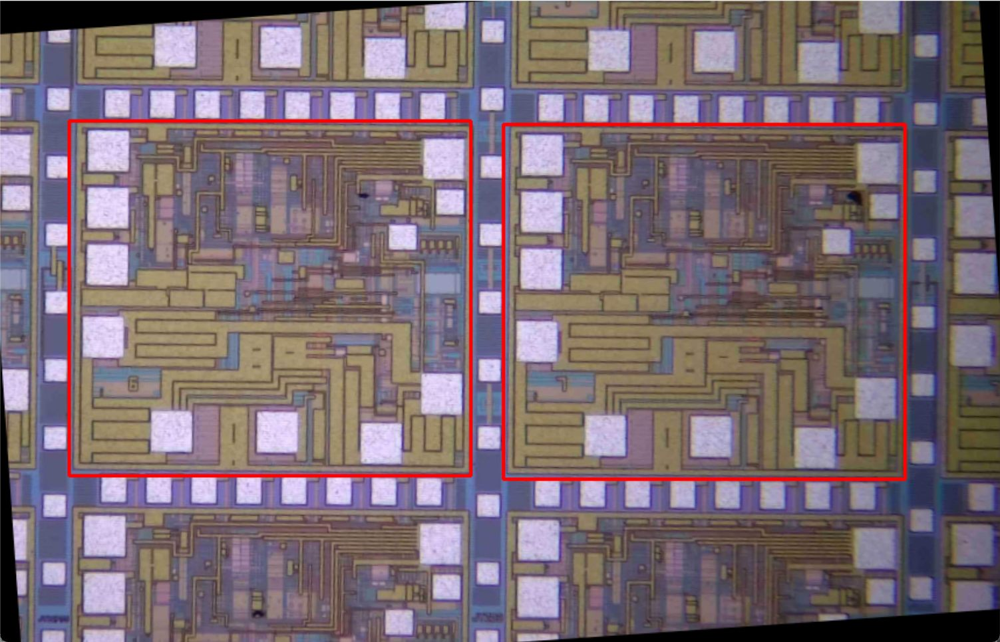
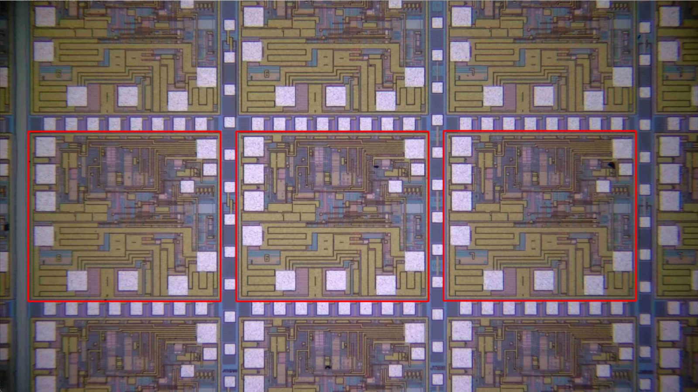
通过同态滤波有效消除光照不均和系统噪声的干扰；并通过双阈值迭代法求解标准图， 作为后续缺陷提取时的金模版。
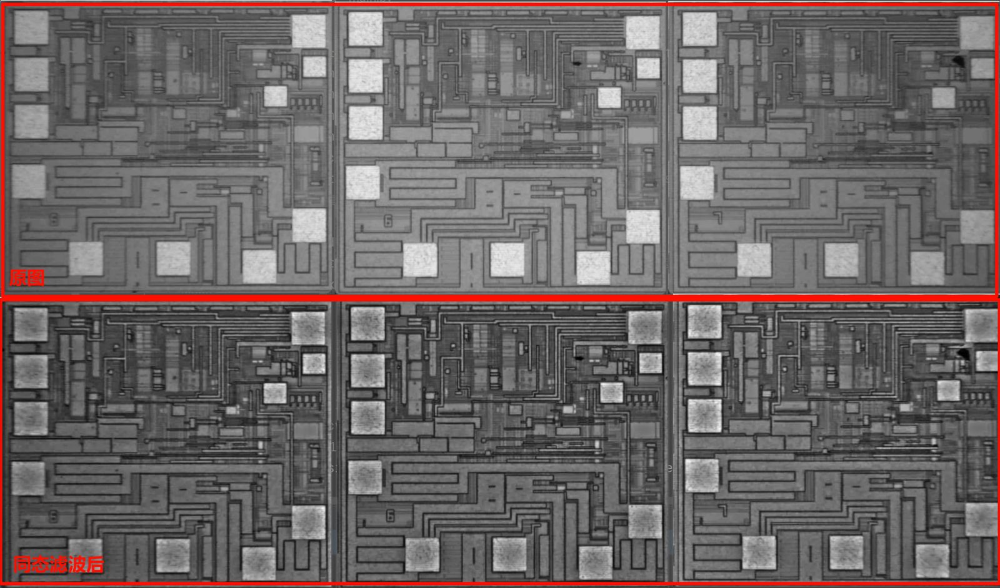
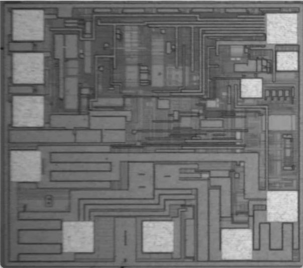
将切割后的子结构与金模版进行灰度差分，成功提取微细缺陷图像， 在实测中取得了良好的检测效果。
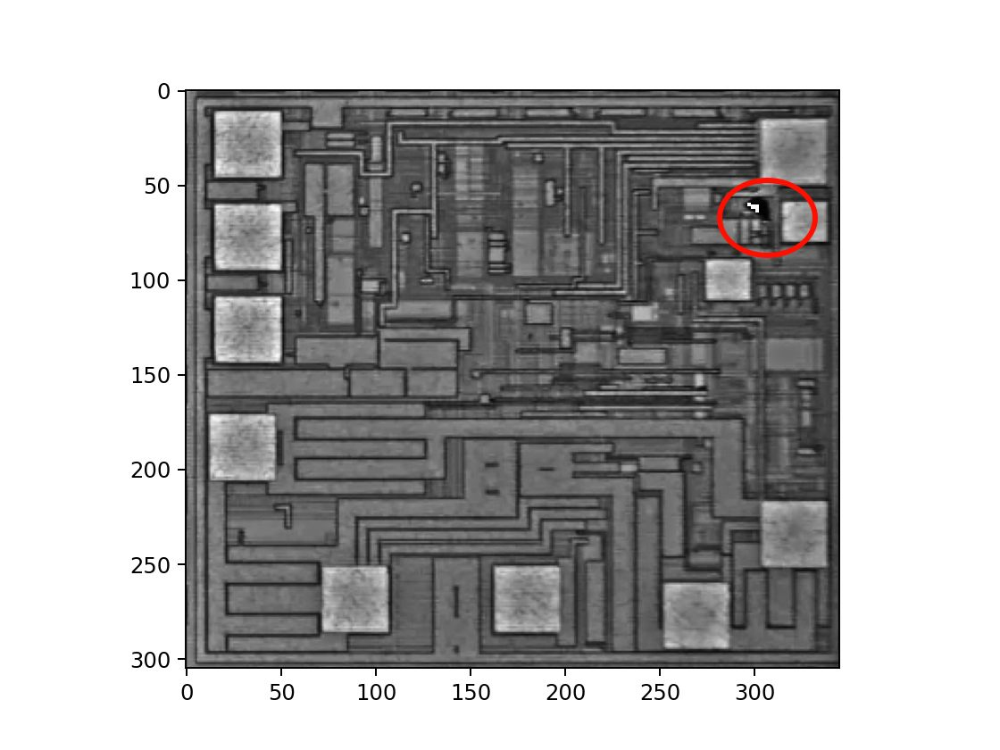
主导视觉硬件选型，确保成像质量满足算法对明暗场特征提取的要求， 推动项目从算法验证走向实际检测环节的落地。